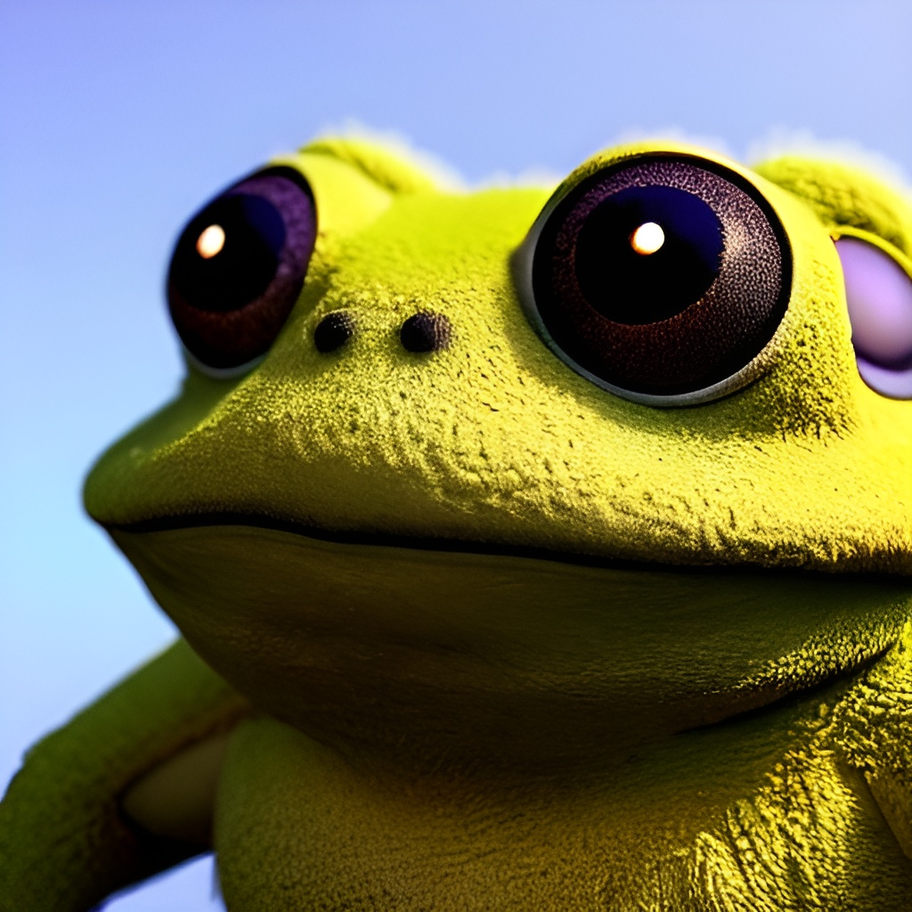

<div class="side-nav">
  <div class="user-block">
    <div class="user-photo">
      
    </div>
    <div class="user-info">
      <span>Admin</span>
      <p>Bottom info</p>
    </div>
  </div>
  <div class="navigation">
    <button mat-raised-button color="primary" (click)="changeRoute('appointments')"><span>Appointments</span><mat-icon>event</mat-icon></button>
    <button mat-raised-button color="primary" (click)="changeRoute('patients')"><span>Patients</span><mat-icon>person</mat-icon></button>
    <button mat-raised-button color="primary"><span>Employees</span><mat-icon>badge</mat-icon></button>
  </div>
  <div class="footer">
    <button mat-raised-button color="accent"><span>Settings</span><mat-icon>settings</mat-icon></button>
    <button mat-raised-button color="warn" routerLink="/home"><span>Log out</span><mat-icon>logout</mat-icon></button>
  </div>
</div>

